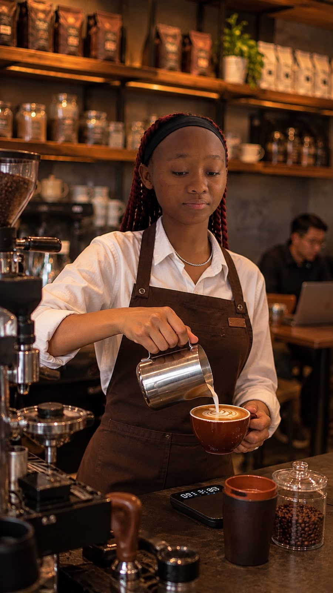

Our Story
Savanna Brew Cafe opened in 2019 with one small espresso machine and a big dream: to celebrate Kenyan coffee. Founder Amina Otieno grew up on her grandparents' coffee farm in Nyeri and wanted to bring that flavour to the city. Today the cafe supports local farmers, uses eco-friendly packaging and hosts community events every month.
"Coffee is more than a drink - it's how we welcome people home." - Amina Otieno, Founder
Our Values
Quality
Only freshly roasted, single-origin Kenyan beans.
Community
Fair prices for farmers and a welcoming space for all.
Sustainability
Compostable cups and zero-waste pastries.